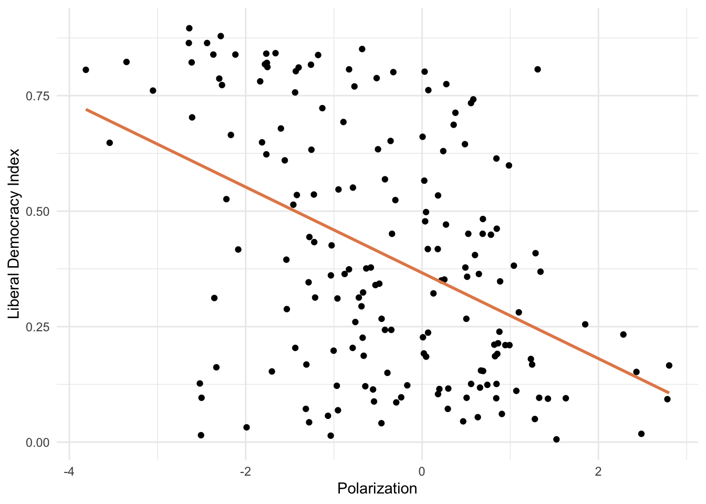

In the previous module, we discussed simple linear regression, which models the relationship between a response variable and a single explanatory variable. In this module, we extend that to multiple linear regression, which allows us to model the relationship between a response variable and multiple predictors simultaneously.
Multiple Regression
Multiple linear regression extends the bivariate model by adding more predictors:
\[Y = a + b_1X_1 + b_2X_2 + \ldots + b_nX_n\]
Where \(Y\) is the response variable, \(a\) is the intercept, and \(b_1\) through \(b_n\) are the coefficients for predictors \(X_1\) through \(X_n\).
The key phrase in multiple regression is “holding other variables constant” (sometimes phrased as ceteris paribus, Latin for “all else equal”). Each coefficient represents the expected change in \(Y\) for a one-unit change in that predictor, while controlling for all the other predictors in the model.
We use data from 2006 to demonstrate. Let’s start by looking at polarization as a predictor of democracy:
ggplot(model_data, aes(x =polarization, y =libdem))+geom_point()+geom_smooth(method ="lm", color ="#E48957", se =FALSE)+labs(x ="Polarization", y ="Liberal Democracy Index")+theme_minimal()

There is a clear negative relationship — more polarized countries tend to be less democratic. Let’s estimate this bivariate model:
model1<-lm(libdem~polarization, data =model_data)summary(model1)
Call:
lm(formula = libdem ~ polarization, data = model_data)
Residuals:
Min 1Q Median 3Q Max
-0.58420 -0.17264 -0.03252 0.18056 0.56220
Coefficients:
Estimate Std. Error t value Pr(>|t|)
(Intercept) 0.36649 0.01895 19.34 < 2e-16 ***
polarization -0.09282 0.01404 -6.61 4.47e-10 ***
---
Signif. codes: 0 '***' 0.001 '**' 0.01 '*' 0.05 '.' 0.1 ' ' 1
Residual standard error: 0.2398 on 175 degrees of freedom
Multiple R-squared: 0.1998, Adjusted R-squared: 0.1952
F-statistic: 43.7 on 1 and 175 DF, p-value: 4.466e-10
The coefficient for polarization is approximately −0.088 and statistically significant: a one-unit increase in polarization is associated with a 0.088 decrease in the democracy score.
model2<-lm(libdem~polarization+log_wealth, data =model_data)summary(model2)
Call:
lm(formula = libdem ~ polarization + log_wealth, data = model_data)
Residuals:
Min 1Q Median 3Q Max
-0.66770 -0.15112 0.04516 0.17776 0.42283
Coefficients:
Estimate Std. Error t value Pr(>|t|)
(Intercept) 0.09668 0.04423 2.186 0.0302 *
polarization -0.05779 0.01372 -4.213 4.08e-05 ***
log_wealth 0.09998 0.01495 6.687 3.14e-10 ***
---
Signif. codes: 0 '***' 0.001 '**' 0.01 '*' 0.05 '.' 0.1 ' ' 1
Residual standard error: 0.216 on 170 degrees of freedom
(4 observations deleted due to missingness)
Multiple R-squared: 0.3656, Adjusted R-squared: 0.3582
F-statistic: 48.99 on 2 and 170 DF, p-value: < 2.2e-16
The coefficient for polarization is now approximately −0.05. This is the effect of polarization holding GDP per capita fixed. Similarly, the coefficient for log wealth tells us the association with democracy holding polarization fixed. Notice how the coefficients can change when we add predictors — this happens when predictors are correlated with each other.
Let’s add a third predictor — oil rents per capita:
model3<-lm(libdem~polarization+log_wealth+oil_rents, data =model_data)summary(model3)
Call:
lm(formula = libdem ~ polarization + log_wealth + oil_rents,
data = model_data)
Residuals:
Min 1Q Median 3Q Max
-0.53085 -0.14849 0.03728 0.12810 0.67727
Coefficients:
Estimate Std. Error t value Pr(>|t|)
(Intercept) 2.320e-02 4.151e-02 0.559 0.577
polarization -5.660e-02 1.270e-02 -4.458 1.56e-05 ***
log_wealth 1.371e-01 1.471e-02 9.315 < 2e-16 ***
oil_rents -4.169e-05 5.915e-06 -7.048 5.32e-11 ***
---
Signif. codes: 0 '***' 0.001 '**' 0.01 '*' 0.05 '.' 0.1 ' ' 1
Residual standard error: 0.1922 on 158 degrees of freedom
(15 observations deleted due to missingness)
Multiple R-squared: 0.5099, Adjusted R-squared: 0.5006
F-statistic: 54.79 on 3 and 158 DF, p-value: < 2.2e-16
The oil rents coefficient is negative and significant: holding polarization and GDP fixed, higher oil rents are associated with lower democracy.
Categorical Predictors
Another important topic is how to include categorical variables in regression models. Categorical variables represent distinct groups rather than continuous numeric values — examples include regime type, world region, or the presence or absence of an institution.
We handle categorical variables through dummy variables (also called indicator variables): one binary (0/1) variable for each category, with one category left out as the reference category. R handles this automatically when a variable is stored as a factor.
Binary Categorical Variable: Judicial Review
Let’s explore whether countries with judicial review tend to be more democratic. We already converted judicial_review to a factor in the setup chunk. Let’s visualize the relationship:
At every level of wealth, countries with judicial review tend to have higher democracy scores. We can quantify this by including judicial_review as a predictor:
model4<-lm(libdem~log_wealth+judicial_review, data =model_data)summary(model4)
Call:
lm(formula = libdem ~ log_wealth + judicial_review, data = model_data)
Residuals:
Min 1Q Median 3Q Max
-0.63761 -0.11865 0.02921 0.15207 0.51581
Coefficients:
Estimate Std. Error t value Pr(>|t|)
(Intercept) -0.21189 0.05680 -3.731 0.00026 ***
log_wealth 0.12064 0.01298 9.297 < 2e-16 ***
judicial_reviewYes 0.31158 0.04718 6.605 4.9e-10 ***
---
Signif. codes: 0 '***' 0.001 '**' 0.01 '*' 0.05 '.' 0.1 ' ' 1
Residual standard error: 0.2025 on 170 degrees of freedom
(4 observations deleted due to missingness)
Multiple R-squared: 0.4425, Adjusted R-squared: 0.4359
F-statistic: 67.45 on 2 and 170 DF, p-value: < 2.2e-16
Understanding Reference Categories
When R includes a factor in a regression, it creates dummy variables for each level except one. That omitted level is the reference category (or baseline). All coefficients for the factor are then interpreted relative to that baseline.
Here, “No” is the reference category for judicial_review (R uses the first factor level). The intercept represents the expected democracy level for countries without judicial review. The coefficient for judicial_reviewYes tells us how much higher the expected democracy score is for countries with judicial review, holding GDP fixed.
The coefficient of approximately 0.26 for judicial_reviewYes means that, holding GDP per capita fixed, countries with judicial review are expected to score about 0.26 points higher on the liberal democracy index.
Multi-Category Variable: World Region
When a categorical variable has more than two levels, R creates one dummy for each level except the reference. Let’s fit a model with world region as the predictor:
[1] "Eastern Europe" "Latin America"
[3] "MENA" "Sub-Saharan Africa"
[5] "Western Europe & North America" "Asia & Pacific"
Eastern Europe is the first level, so it will serve as the reference category.
model5<-lm(libdem~region, data =model_data)summary(model5)
Call:
lm(formula = libdem ~ region, data = model_data)
Residuals:
Min 1Q Median 3Q Max
-0.45848 -0.13314 -0.02148 0.11452 0.49130
Coefficients:
Estimate Std. Error t value Pr(>|t|)
(Intercept) 0.43287 0.03598 12.030 < 2e-16 ***
regionLatin America 0.06661 0.05337 1.248 0.21367
regionMENA -0.23717 0.05689 -4.169 4.86e-05 ***
regionSub-Saharan Africa -0.14065 0.04551 -3.090 0.00233 **
regionWestern Europe & North America 0.37343 0.05397 6.919 8.73e-11 ***
regionAsia & Pacific -0.13372 0.05179 -2.582 0.01065 *
---
Signif. codes: 0 '***' 0.001 '**' 0.01 '*' 0.05 '.' 0.1 ' ' 1
Residual standard error: 0.1971 on 171 degrees of freedom
Multiple R-squared: 0.472, Adjusted R-squared: 0.4566
F-statistic: 30.57 on 5 and 171 DF, p-value: < 2.2e-16
Each regional coefficient represents the expected difference in democracy between that region and Eastern Europe. For example, the coefficient for MENA tells us how much more (or less) democratic MENA countries are expected to be compared to Eastern European countries.
What if you want a different baseline? Use relevel() to change the reference category:
model_data_relevel<-model_data|>mutate(region2 =relevel(region, ref ="Sub-Saharan Africa"))model6<-lm(libdem~region2, data =model_data_relevel)summary(model6)
Call:
lm(formula = libdem ~ region2, data = model_data_relevel)
Residuals:
Min 1Q Median 3Q Max
-0.45848 -0.13314 -0.02148 0.11452 0.49130
Coefficients:
Estimate Std. Error t value Pr(>|t|)
(Intercept) 0.292220 0.027871 10.485 < 2e-16 ***
region2Eastern Europe 0.140647 0.045513 3.090 0.00233 **
region2Latin America 0.207260 0.048273 4.293 2.94e-05 ***
region2MENA -0.096520 0.052141 -1.851 0.06588 .
region2Western Europe & North America 0.514072 0.048939 10.504 < 2e-16 ***
region2Asia & Pacific 0.006923 0.046517 0.149 0.88187
---
Signif. codes: 0 '***' 0.001 '**' 0.01 '*' 0.05 '.' 0.1 ' ' 1
Residual standard error: 0.1971 on 171 degrees of freedom
Multiple R-squared: 0.472, Adjusted R-squared: 0.4566
F-statistic: 30.57 on 5 and 171 DF, p-value: < 2.2e-16
Now all coefficients are interpreted relative to Sub-Saharan Africa. Eastern Europe is expected to be about 0.14 units more democratic than Sub-Saharan Africa, and so on.
Making Predictions
Once we have estimated a model, we can use it to make predictions for hypothetical cases using R’s predict() function. Let’s use our model with polarization, wealth, and oil rents (model3). Suppose we want to predict the democracy level for a country with:
The model predicts a democracy score of approximately 0.46 for this hypothetical country. This prediction is a principled estimate based on the relationships learned from the original data — not a guarantee, but a useful summary of what the model expects.
Your Turn
The data also includes a categorical regime variable: Closed Autocracy (0), Electoral Autocracy (1), Electoral Democracy (2), Liberal Democracy (3), and a corruption measure.
Convert regime into a factor in model_data.
Check the levels and identify the reference category.
Visualize the average corruption level across regime types using a bar plot.
Fit a regression model predicting corruption from regime. Interpret the coefficients.
Switch the reference category to “Electoral Democracy” (level 2) and refit. How do the coefficients change?